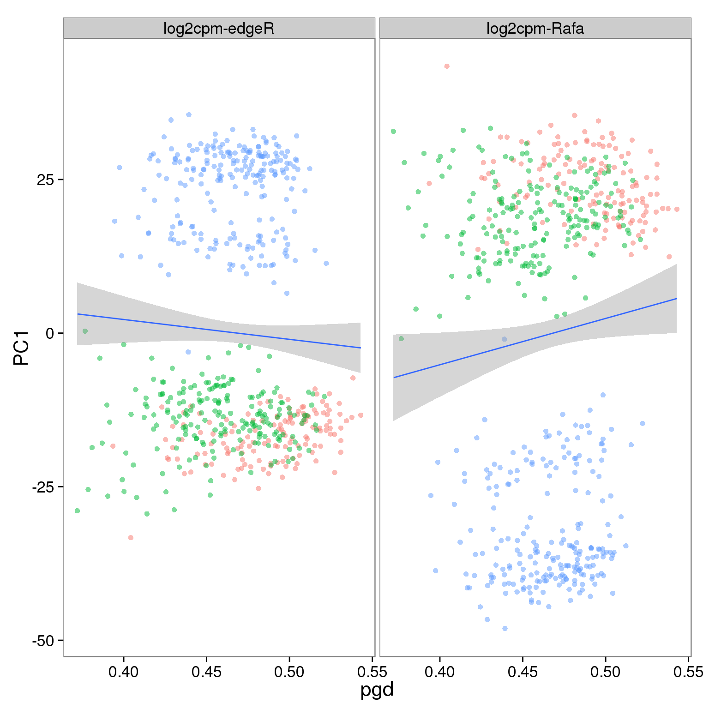
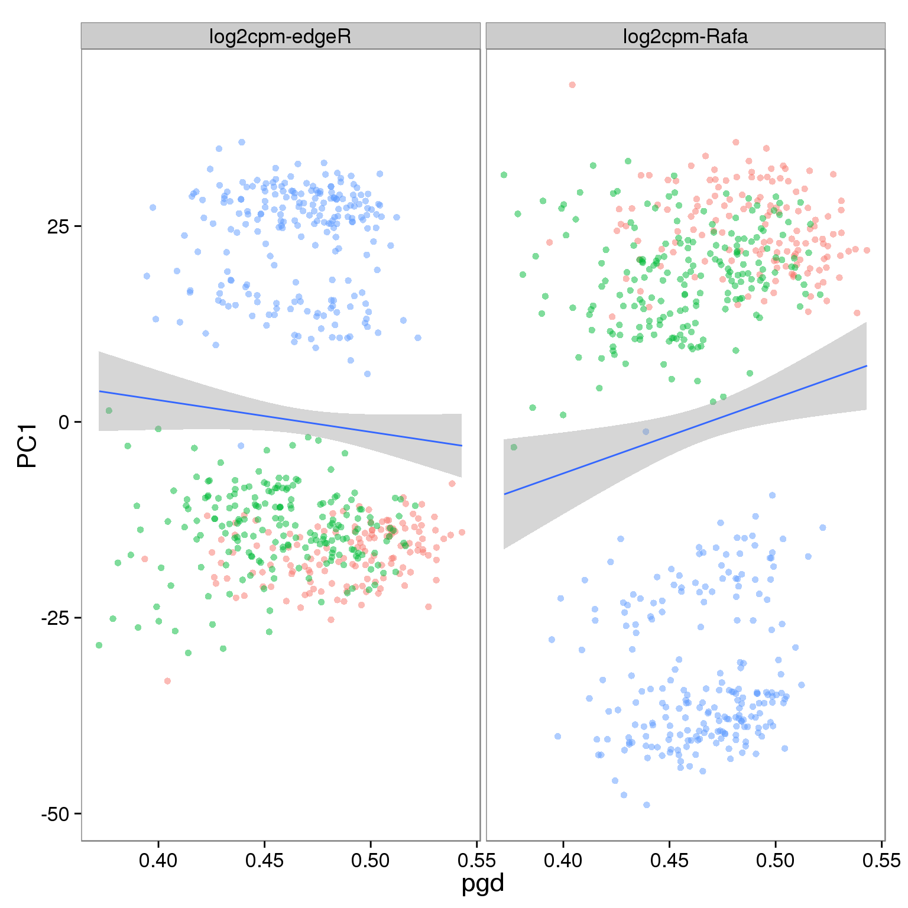
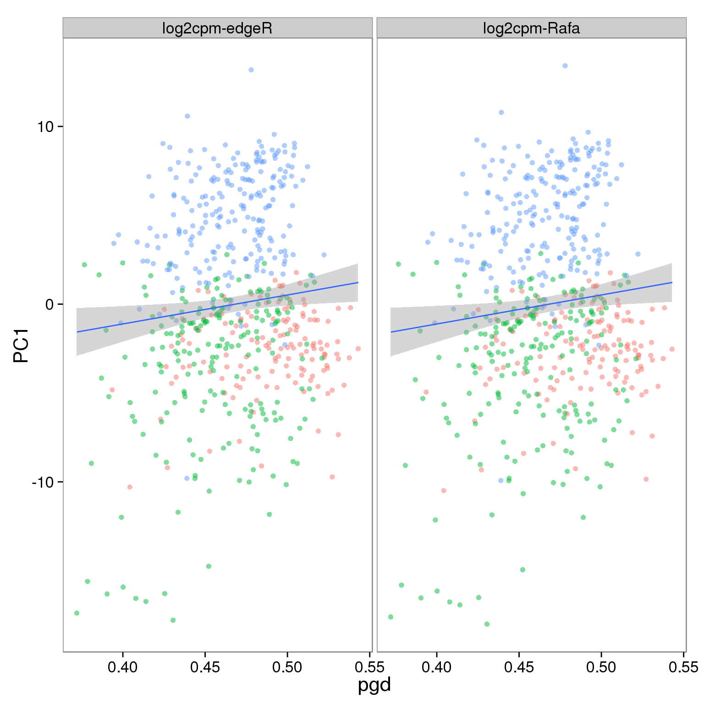

Last updated: 2016-04-28
Code version: 75e23ae09f8128081e5241c204064c50b6625372
source("functions.R")
library("edgeR")
library("tidyr")
library("ggplot2")
library("cowplot")
library("gmodels")
theme_set(theme_bw(base_size = 16))
theme_update(panel.grid.minor.x = element_blank(),
panel.grid.minor.y = element_blank(),
panel.grid.major.x = element_blank(),
panel.grid.major.y = element_blank())Previously, we investigated proportion of genes detected in the cells under different scenarios of pseudocounts (link). Hicks et al. link computed principal components using mean-centered data with raw variances, while we used mean-centered data with unit variances. Here we will repeat the analyses in link using mean-centered data with raw variances.
Little to no correlation between PC1 loadings and proportion of genes detected, as when PCA analysis was done on unit-variance transformed data
Input annotation
anno <- read.table("../data/annotation.txt", header = TRUE,
stringsAsFactors = FALSE)
anno_filter <- read.table("../data/annotation-filter.txt", header = TRUE,
stringsAsFactors = FALSE)Input molecule counts
molecules <- read.table("../data/molecules.txt", header = TRUE,
stringsAsFactors = FALSE)
molecules_filter <- read.table("../data/molecules-filter.txt", header = TRUE,
stringsAsFactors = FALSE)
molecules_final <- read.table("../data/molecules-final.txt", header = TRUE,
stringsAsFactors = FALSE)molecules_qc <- molecules[, which(colnames(molecules) %in% colnames(molecules_filter) )]
dim(molecules_qc)[1] 19027 564However, some genes have zero counts across only the quality single cells. Thus we remove these.
zero_genes <- rowSums(molecules_qc) == 0
molecules_qc <- molecules_qc[!zero_genes, ]Lastly, we include a subset of ubiquitous genes which were detected in every cell, i.e. the PGD will be 1 for all samples.
ubiquitous_genes <- rowSums(molecules_qc > 0) == ncol(molecules_qc)
molecules_ubiq <- molecules_qc[ubiquitous_genes, ]Define a function to calculate PGD.
calc_pgd <- function(x) {
# Calculate the proportion of genes detected (PGD) per sample/column
#
# x - gene expression counts
#
# Returns a numeric vector
stopifnot(!is.null(dim(x)),
x == as.integer(as.matrix(x)))
num_genes_detected <- colSums(x > 0)
num_total_genes <- nrow(x)
prop_genes_detected <- num_genes_detected / num_total_genes
stopifnot(is.numeric(prop_genes_detected),
length(prop_genes_detected) == ncol(x),
prop_genes_detected <= 1,
prop_genes_detected >= 0)
return(prop_genes_detected)
}Calculate the PGD using all genes with at least one read detected in at least one single cell.
pgd_all <- calc_pgd(molecules_qc)
summary(pgd_all) Min. 1st Qu. Median Mean 3rd Qu. Max.
0.3721 0.4459 0.4717 0.4684 0.4926 0.5431 Molecule log2 counts per million (edgeR) from all genes with at least one observed read.
pca <- run_pca(cpm(molecules_qc, log = TRUE), scale = FALSE)
d <- data.frame(id = rownames(pca$PCs), pca$PCs[, 1:2],
explained = pca$explained, pgd = pgd_all,
type = "molecules", genes = "all", processing = "log2cpm-edgeR")
d_full <- dMolecule log2 counts per million (edgeR) from set of filtered genes.
pca <- run_pca(cpm(molecules_filter, log = TRUE), scale = FALSE)
d <- data.frame(id = rownames(pca$PCs), pca$PCs[, 1:2],
explained = pca$explained, pgd = pgd_all,
type = "molecules", genes = "filter",
processing = "log2cpm-edgeR")
d_full <- rbind(d_full, d)Molecule log2 counts per million (edgeR) from set of ubiquitous genes.
pca <- run_pca(cpm(molecules_ubiq, log = TRUE), scale = FALSE)
d <- data.frame(id = rownames(pca$PCs), pca$PCs[, 1:2],
explained = pca$explained, pgd = pgd_all,
type = "molecules", genes = "ubiq",
processing = "log2cpm-edgeR")
d_full <- rbind(d_full, d)Molecule counts per million (Rafa) from all genes with at least one observed read.
pca <- run_pca(log2(cpm(molecules_qc) + 1), scale = FALSE)
d <- data.frame(id = rownames(pca$PCs), pca$PCs[, 1:2],
explained = pca$explained, pgd = pgd_all,
type = "molecules", genes = "all",
processing = "log2cpm-Rafa")
d_full <- rbind(d_full, d)Molecule counts per million (Rafa) from set of filtered genes.
pca <- run_pca(log2(cpm(molecules_filter) + 1), scale = FALSE)
d <- data.frame(id = rownames(pca$PCs), pca$PCs[, 1:2],
explained = pca$explained, pgd = pgd_all,
type = "molecules", genes = "filter",
processing = "log2cpm-Rafa")
d_full <- rbind(d_full, d)Molecule counts per million (Rafa) from set of ubiquitous genes.
pca <- run_pca(log2(cpm(molecules_ubiq) + 1), scale = FALSE)
d <- data.frame(id = rownames(pca$PCs), pca$PCs[, 1:2],
explained = pca$explained, pgd = pgd_all,
type = "molecules", genes = "ubiq",
processing = "log2cpm-Rafa")
d_full <- rbind(d_full, d)require(dplyr)Loading required package: dplyr
Attaching package: 'dplyr'
The following objects are masked from 'package:stats':
filter, lag
The following objects are masked from 'package:base':
intersect, setdiff, setequal, unionsummarise(group_by(d_full, type, genes, processing),
corr = cor(PC1, pgd, method = "spearman"))Source: local data frame [6 x 4]
Groups: type, genes
type genes processing corr
1 molecules all log2cpm-edgeR -0.07957672
2 molecules all log2cpm-Rafa 0.13880621
3 molecules filter log2cpm-edgeR -0.10870053
4 molecules filter log2cpm-Rafa 0.18689294
5 molecules ubiq log2cpm-edgeR 0.02149516
6 molecules ubiq log2cpm-Rafa 0.01973237d_full <- separate(d_full, col = id, into = c("individual", "replicate", "well"),
sep = "\\.")Effect of processing on reads using all genes:
p_molecules_all <- ggplot(d_full[d_full$type == "molecules" & d_full$genes == "all", ],
aes(x = pgd, y = PC1)) +
geom_point(aes(color = individual), alpha = 0.5) +
geom_smooth(method = "lm") +
facet_wrap(~processing) +
theme(legend.position = "none")
p_molecules_all
Effect of processing on molecules using filtered genes:
p_molecules_filter <- p_molecules_all %+% d_full[d_full$type == "molecules" & d_full$genes == "filter", ]
p_molecules_filter
Effect of processing on molecules using ubiquitous genes:
p_molecules_filter <- p_molecules_all %+% d_full[d_full$type == "molecules" & d_full$genes == "ubiq", ]
p_molecules_filter
sessionInfo()R version 3.2.0 (2015-04-16)
Platform: x86_64-unknown-linux-gnu (64-bit)
locale:
[1] LC_CTYPE=en_US.UTF-8 LC_NUMERIC=C
[3] LC_TIME=en_US.UTF-8 LC_COLLATE=en_US.UTF-8
[5] LC_MONETARY=en_US.UTF-8 LC_MESSAGES=en_US.UTF-8
[7] LC_PAPER=en_US.UTF-8 LC_NAME=C
[9] LC_ADDRESS=C LC_TELEPHONE=C
[11] LC_MEASUREMENT=en_US.UTF-8 LC_IDENTIFICATION=C
attached base packages:
[1] stats graphics grDevices utils datasets methods base
other attached packages:
[1] dplyr_0.4.2 testit_0.4 gmodels_2.16.2 cowplot_0.3.1
[5] ggplot2_1.0.1 tidyr_0.2.0 edgeR_3.10.2 limma_3.24.9
[9] knitr_1.10.5
loaded via a namespace (and not attached):
[1] Rcpp_0.12.0 magrittr_1.5 MASS_7.3-40 munsell_0.4.2
[5] colorspace_1.2-6 R6_2.1.1 stringr_1.0.0 httr_0.6.1
[9] plyr_1.8.3 tools_3.2.0 parallel_3.2.0 grid_3.2.0
[13] gtable_0.1.2 DBI_0.3.1 gtools_3.5.0 htmltools_0.2.6
[17] lazyeval_0.1.10 assertthat_0.1 yaml_2.1.13 digest_0.6.8
[21] reshape2_1.4.1 formatR_1.2 codetools_0.2-11 bitops_1.0-6
[25] RCurl_1.95-4.6 evaluate_0.7 rmarkdown_0.6.1 labeling_0.3
[29] gdata_2.16.1 stringi_0.4-1 scales_0.2.4 proto_0.3-10